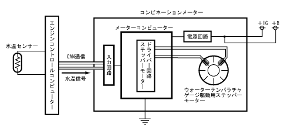

The engine control computer receives the resistance change detected by the water temperature sensor and sends the water temperature signal to the meter computer as a CAN communication signal.
•
The meter computer receives the water temperature signal as a CAN communication signal and drives the stepper motor driver circuit according to the data to control the rotation angle, direction and speed of the pointer (stepper motor rotor), thereby indicating the engine coolant temperature.
•
The meter computer performs initialization control that returns the pointer to the zero position each time power is supplied to the combination meter.

Labels in this picture: Combination Meterコンビネーションメーター +B+B Meter Computerメーターコンピューター Power Circuit電源回路 Engine Coolant Temperature Sensor水温センサー CAN communicationCAN通信 Coolant temperature signal水温信号 Water Temperature Gauge Drive Stepper Motorウォーターテンペラチャーゲージ駆動用ステッパーモーター
 Water Temperature Gauge Specifications
Water Temperature Gauge Specifications